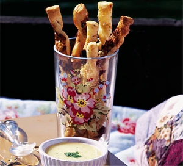

Quick cheese straws

Description
Delicious cheesy sticks, perfect for dipping, just as good on their own - ready in under 20 minutes.
Ingredients
- 350g pack ready-rolled puff pastry
- four handfuls grated parmesan (or vegetarian alternative)
- handful flour, to roll pastry on
Steps
- Heat oven to 220c/fan 200c/gas 7
- Unroll a puff pastry, scatter over a couple of handfuls of grated Parmesan, then fold in half
- On a lightly floured surface, roll out to the thickness of a £1 coin. Cut into 1cm strips, then twist the strips 3-4 times
- Lay on a baking sheet, scatter over more cheese and bake for 12 mins, or until golden
- Leave to cool, then keep in an airtight container for up to 2 days. As these cheese straws are very delicate, roll them in kitchen paper before packing into a plastic container